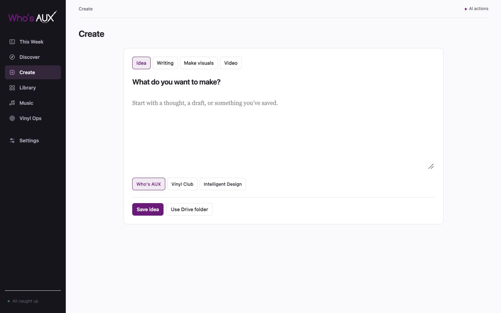
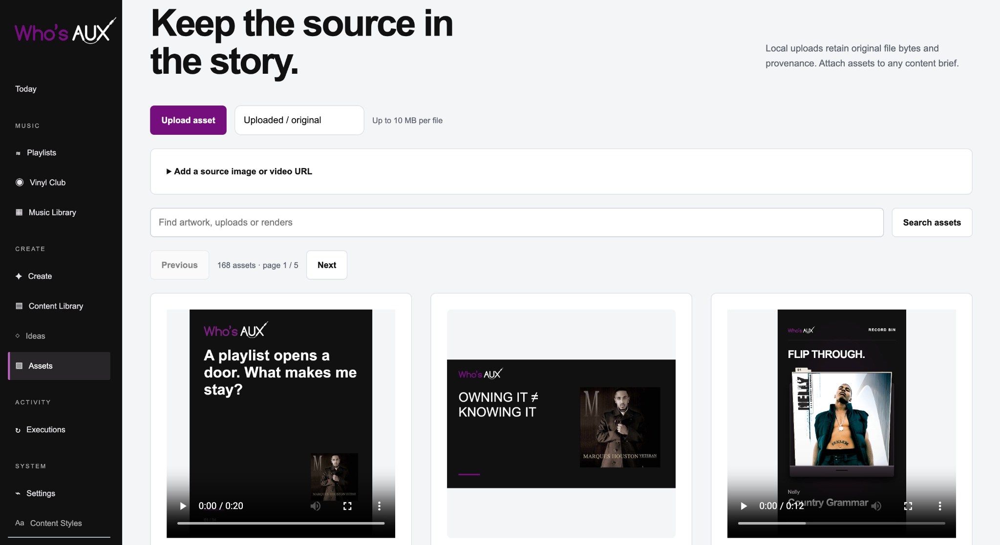
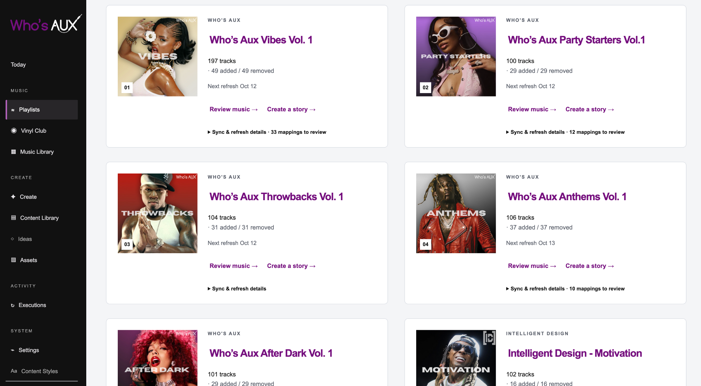
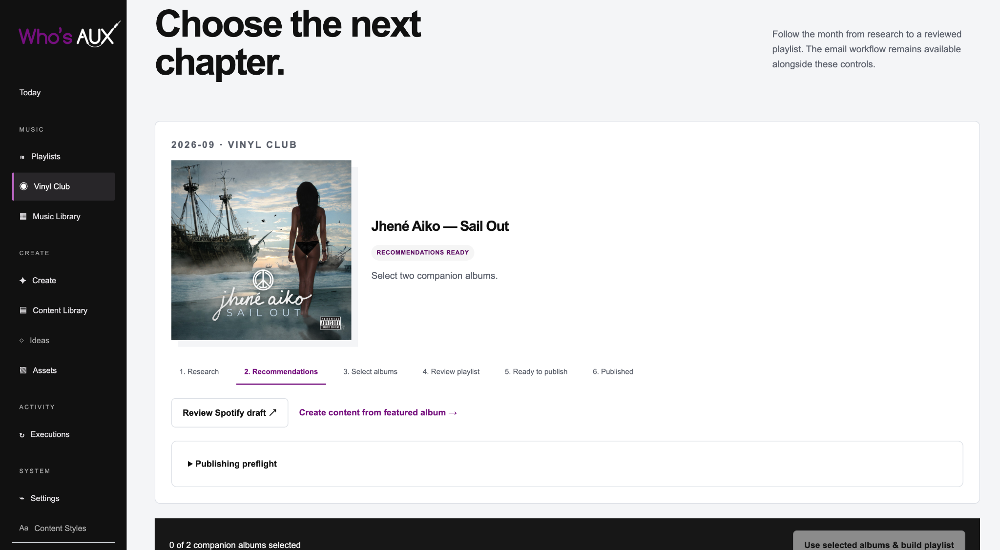

01 / Discover
Save the reason to make it
Discover collects editorial references and source context. Saved references can inform an idea or brief without being treated as finished content.
I built Music Ops around a problem I knew as a marketer and producer: research, drafts, source files, and publishing plans were scattered across tools. What began as playlist automation has become an independent content operations project connecting research, editorial discovery, the Library, Create, weekly planning, and production.
Music Ops brings the work before and around production into one place. I can save references, develop writing, organize assets, and plan the week while keeping drafts, exports, and published work distinct.
THREE CONNECTED AREAS

My role spans product direction, workflow design, application development, and the editorial work the system supports. I define the problem, build the interface and data relationships, and use the tools in my own content practice.
The first goal was to reduce the repeated work behind themed playlists: finding candidates, checking identities, applying curation rules, and publishing updates on schedule.
Once that workflow was established, I reused the catalog for Vinyl Club research. As the work expanded, I added a dashboard for reviewing playlists, managing assets, and planning the content that comes from them.
The Assets view keeps uploads and finished media together, with their sources attached. That matters when a recommendation becomes a playlist, a video, or a brief someone else needs to pick up.

The original system was built around five Who’s AUX playlists and four Intelligent Design playlists, sharing a catalog but using different curation rules and schedules. The runner collects candidates, checks identity and duplication, applies theme rules, and refreshes eligible playlists.
Manual edits remain part of the process. Changes are recorded and reconciled so a scheduled refresh does not undo an editorial decision.

The discovery process combines Apple Music charts and seed playlists with Last.fm, ListenBrainz, and existing observations. Spotify provides additional identity and playability checks. Local MusicBrainz reference data supports artist and recording research.
I designed the working database to separate original source evidence from normalized music records and playlist state. That allows me to reuse research without losing the basis for a recommendation.
track_sources and track_signals preserve source evidencemanual_playlist_events records human adds and removalsplaylist_observed_state tracks what is actually livevinyl_month_tracks stores the approved monthly state01 / Discover
Discover collects editorial references and source context. Saved references can inform an idea or brief without being treated as finished content.
02 / Library & Create
The Library brings ideas, scripts, articles, Notes, and visual work together. Create supports manual briefs and editorial development; I review the sources and shape the result.
03 / This Week
Weekly planning distinguishes work to do, scheduled pieces, and completed work. The next step stays visible alongside the work.
04 / Assets & production
Files stay attached to the work. The Tandem handoff records the project and timeline and freezes the saved script revision. That keeps the editorial source stable as production moves forward.
The handoff connects to my separate Tandem project ↗. Keeping the editorial source stable matters when a script is already recorded or in an edit.
Vinyl Club uses the same research foundation for its monthly feature. An album link begins a process of discovery, companion recommendations, and a proposed playlist.
The final album selections and playlist remain subject to editorial approval. The dashboard tracks progress and makes the approved material available for related content planning.

01 / EMAIL
Start with a link Resend receives the message, posts it to a webhook, and writes the event to SQLite before processing.02 / RESEARCH
Resolve and recommend The anchor album is normalized, then local MusicBrainz data plus Apple, Last.fm, ListenBrainz, and selective Spotify checks build a shortlist.03 / PICK
Keep the decision human The editor selects two companion records. Spotify identities and track sets are frozen so the approved choice stays stable.04 / DRAFT
Build and review The playlist mixes representative tracks from the three records with discovery-first expansion, plus caps and quality checks.05 / PUBLISH
Ship and package Spotify publishes the draft, Apple publishes the confident subset, and a monthly content packet is generated from the final result.Music Ops now connects Discover, the Library, Create, weekly planning, assets, and production handoffs in a working local application. Research and editorial records can move into production with their sources and decisions still attached.
The current Create workspace is shown above; the playlist, asset, and Vinyl Club images document earlier stages of the application. Together, they show how the project grew from a specific automation into a broader content operations platform.
The most useful lesson has been to design around continuity: where the work came from, what state it is in, and what needs to happen next. Clear states, preserved originals, and thoughtful handoffs make the platform useful in everyday production.